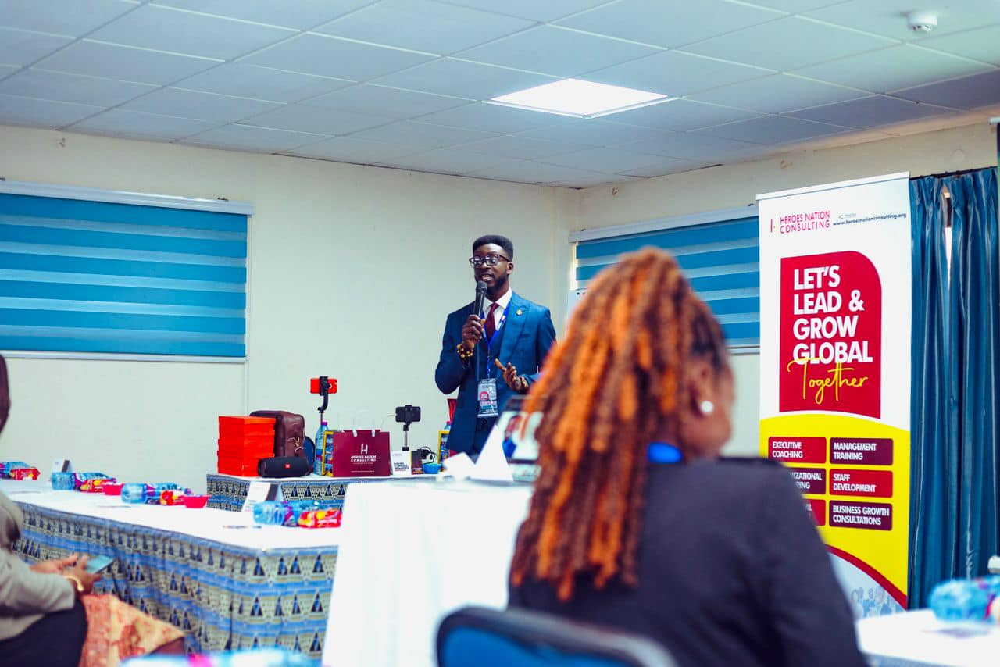

We develop leaders, strengthen systems, and deliver measurable change, staying with you through implementation.
"This training was not just insightful, it was transformative. We are already seeing measurable improvements in how our teams collaborate and deliver patient-centered care."
"The impact of this training is immediate and far-reaching. Our staff left equipped with practical tools they could apply instantly across departments."
"This training showed that excellence goes beyond clinical expertise; it requires strong leadership, efficient systems, and cohesive teamwork. It has helped us operate with greater clarity and purpose."
Structured adoption plans that turn change into sustained behaviour.
Best for: Restructures, system rollouts, and culture shifts
How It Works
Diagnose the current culture, define the target, and embed the behaviours your strategy needs.
Best for: Post-merger integration, performance plateaus, leadership transitions
How It Works
Reset team clarity and ways of working by removing systemic blockers to performance.
Best for: High-potential teams with persistent underperformance or conflict
How It Works
A structured programme to strengthen strategy, executive presence, and leadership team performance.
Best for: C-suite, Directors, and senior leadership cohorts
How It Works
Help new managers move from individual contributor to confident people leader—fast.
Best for: First-time managers and recently promoted team leads
How It Works
Audit and redesign your people infrastructure to reduce risk and support scale.
Best for: Scaling organisations, post-restructures, and HR transformation projects
How It Works
Ongoing mentorship for career moves, leadership challenges, and personal growth goals.
Best for: Mid-career professionals, rising leaders, and first-time executives
How It Works
Confidential coaching for senior leaders navigating decisions, transitions, and performance plateaus.
Best for: C-suite executives, senior directors, and high-potential leaders
How It Works
Build the leadership systems and operating cadence needed for your next stage of growth.
Best for: Founders scaling teams, CEOs shifting from operator to architect
How It Works
Leadership training for healthcare professionals stepping into management, built for clinical realities.
Best for: Hospitals, HMOs, healthcare groups, and public health agencies
How It Works
Research-informed keynotes and sessions for corporate events, retreats, and leadership conferences.
Best for: Corporate events, annual retreats, leadership conferences, and HR summits
How It Works
Many consultancies stop at analysis. DOGLC stays through implementation, building adoption, strengthening leadership systems, and tracking measurable change from day one.
We deliver structured programmes that build leadership capacity and embed lasting change, tied to your business outcomes, not a generic curriculum.

Clinically excellent professionals stepping into management roles need a different kind of support. We deliver programmes built specifically for healthcare settings.
We work with founders and CEOs to build the leadership infrastructure and management systems needed for the next stage of growth.
We bring experience across government institutions, delivering leadership and change programmes that work within public sector realities, not around them.
Tell us what you are working through. We will confirm your session within 24 hours.
A DOGLC consultant will be in touch within 24 hours to confirm your session and next steps. Please check your email.